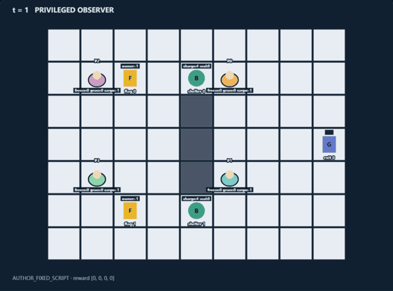
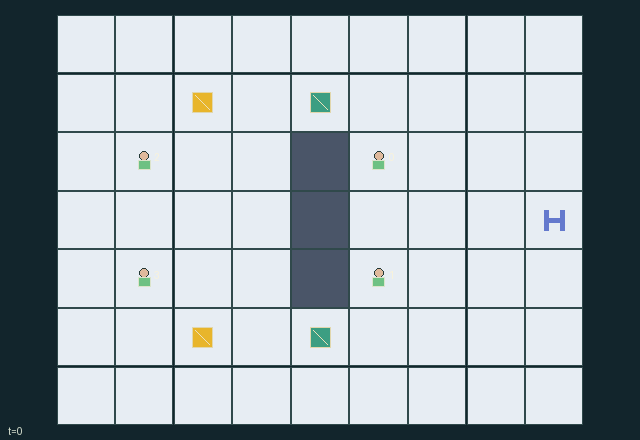

GI099 · Lantern Courtyard

Original recording scope: 原回放视角 · Mode: 固定脚本演示
Additional generated state replay (different trajectory / full-state debug)

Wardens aim to immobilize every courier still inside. Couriers aim to get both pennants out, one carried pennant per escaping courier, while keeping their partner available for rescue.
Identity and original contract
4 independently actionable roles; 7 discrete commands per role; 73 native observation columns per role; original horizon 96 steps. Declared per-step reward range: -16 to 16. Observation regime: partially_observable.
Source SHA-256: a355223f334d3ddcfe71534c335342c327adcf0862c3d4a35f1d249dbb4472ae
The objective, rewards, population, map and horizon remain original. A preview is not a success claim.
Objective and gameplay
Wardens aim to immobilize every courier still inside. Couriers aim to get both pennants out, one carried pennant per escaping courier, while keeping their partner available for rescue.
Workers occupy a courtyard with two routes around a wall. Tagging drops carried cargo and removes the target's next actions. A nearby courier can free the partner with grace before the tag phase. Both couriers draw from the same regenerating shelter charges; wardens can seal those physical shelters. Exiting removes a possible rescuer while also securing a payoff.
- Two wardens pursue two pennant-carrying couriers around a central wall.
- Tagging an adjacent unprotected courier freezes them and drops their pennant.
- An adjacent teammate can rescue a frozen courier, granting temporary protection.
- Couriers must spend finite shelter charges for cover; wardens can seal shelters.
- Couriers share radio positions. Opponents and loose pennants are sensed only nearby.
- An escaped courier cannot return to rescue. The chase ends when both escape or every remaining courier is frozen.
Ending: Both couriers escaped, or every nonescaped courier is currently frozen. If one has escaped and the other is tagged, the wardens end the remaining chase. Otherwise truncate at 96 steps. Frozen timers last at most six steps without retagging; an episode can end earlier. Terminal raw state is absorbing.
What this game explores
Joint transport & shared access: Positions, load geometry, occupancy and persistent access constrain whose action can succeed next. Distinguish physical handoff, shared controls and simultaneous force from a cosmetic cooperation label.
Team opposition & interception: Cooperation within a team can coexist with opposition between teams. Preserve team membership, capture and possession rules, and report each team's outcomes instead of assuming a single shared return.
Survival, protection & rescue: Protection and repair alter another role's future feasible actions. Record losses, exposure, rescue and infrastructure as well as delivery; survival is determined by the actual kernel.
These are questions supported by rule structure, not observed learning effects.
Play it: operating walkthrough
crucibles play --game gi099Keep Python running and open its printed address. Select this game, set a seed and press Create session. The game itself is always English.
Assign a role range to Host with Assign / take over, or Assign all roles. Invite a second participant with Create player invitation, then assign a disjoint subset. Every original role is available.
For every owned role choose a legal command and press Queue. Arrow keys / WASD queue a declared directional action for the current role camera when available. Space or Advance one joint step advances everyone together. Non-directional games use the selectors.
Unqueued roles use the labelled untrained uniform-legal policy. Take over or release roles before the next step without resetting. Full-state debug is privileged and permanently logged; role cameras preserve permissions. Close the session to retain logs. Server restart does not restore sessions.
Complete command reference
IDs and English labels exactly match the manifest. Availability depends on role, resources, location and phase. An available action can still have no productive effect.
0·Wait
1·Move north
2·Move east
3·Move south
4·Move west
5·Warden: tag adjacent vulnerable courier; courier: rescue, otherwise exit with pennant or pick up pennant
6·Warden: seal adjacent shelter; courier: spend a charge while standing on an open shelter
Roles and capability identifiers
These original role names describe capabilities, not interchangeable skins. Check each owned role's legal selector before planning handoffs.
agent_0·Warden on the upper approach
agent_1·Warden on the lower approach
agent_2·Courier initially approaching the upper pennant
agent_3·Courier initially approaching the lower pennant
Information and observation permissions
Same-team workers are always radio-visible. Opponents are visible only within Manhattan distance three; walls do not block this proximity sensor. Pennants are visible within the same radius or when carried by a teammate; delivered pennants are inactive. The static map, shelters, exit, shelter resources and identity-only event announcements are public. Hidden worker and pennant coordinates and attributes are masked exactly as listed; the renderer must honor agent_vis and flag_vis.
The GIF is full-state debug and may reveal hidden entities or private state. Train on obs[agent], not the picture, state tree or another role's private row. Field slices and visibility are in the original manifest.
Reinforcement-learning integration
import jax
from crucibles_jaxmarl import make
env = make("gi099")
key = jax.random.PRNGKey(0)
key, rk, ak, sk = jax.random.split(key, 4)
obs, state = jax.jit(env.reset)(rk)
actions = env.sample_actions(ak, state)
obs, state, rewards, dones, info = jax.jit(env.step_env)(sk, state, actions)
done = dones["__all__"]Observations are float32 vectors of width 73; actions are scalar int32; masks have 7 entries. Supply all 4 roles each transition. Masked sampling is an engineering reference, not a trained learner.
step_env retains terminal data without reset. step performs outer autoreset and keeps terminal data in info["raw_state"] and info["raw_observation"]. Use dones["__all__"] for episode boundaries; separate completion, failure and time limit in analysis.
JIT or vmap equal identities and shapes. Split independent reset, policy and transition keys. Group different shapes explicitly; do not shrink the population or horizon. Host rendering stays outside training.
Training questions and fair evaluation
Define valid completion from the objective before fitting. Preserve original rewards and also report real deliveries/services, losses, resource state, unresolved episodes and per-role returns. Animation is not a reward signal.
Positions, load geometry, occupancy and persistent access constrain whose action can succeed next. Distinguish physical handoff, shared controls and simultaneous force from a cosmetic cooperation label.
Cooperation within a team can coexist with opposition between teams. Preserve team membership, capture and possession rules, and report each team's outcomes instead of assuming a single shared return.
Protection and repair alter another role's future feasible actions. Record losses, exposure, rescue and infrastructure as well as delivery; survival is determined by the actual kernel.
Compare memory, communication or centralized critics under matched actor information. Declare critic access; keep actor inputs role-filtered. Match partner/opponent distributions, masks, compute and checkpoint selection. Final tests never enter fitting or selection.
Independent training runs or source-pairing blocks are inferential units; episodes from one policy are not independent training replications. Save hashes, keys, versions, device, time and cost. Negative, zero, failed and indeterminate outcomes are valid. No trained checkpoint or target score is supplied.
Classification and evidence
Overlapping editorial labels are reading aids, not proof of novelty, difficulty, strategic equivalence or learning effects.
- Joint transport & shared access
- Evidence
manifest.task.objective: Wardens aim to immobilize every courier still inside. Couriers aim to get both pennants out, one carried pennant per escaping courier, while keeping their partner available for rescue.
- Evidence
manifest.task.interaction: Workers occupy a courtyard with two routes around a wall. Tagging drops carried cargo and removes the target's next actions. A nearby courier can free the partner with grace before the tag phase. Both couriers draw from the same regenerating shelter charges; wardens can seal those physical shelters. Exiting removes a possible rescuer while also securing a payoff.
- Evidence
manifest.task.observation_access: Same-team workers are always radio-visible. Opponents are visible only within Manhattan distance three; walls do not block this proximity sensor. Pennants are visible within the same radius or when carried by a teammate; delivered pennants are inactive. The static map, shelters, exit, shelter resources and identity-only event announcements are public. Hidden worker and pennant coordinates and attributes are masked exactly as listed; the renderer must honor agent_vis and flag_vis.
- Team opposition & interception
- Evidence
manifest.task.objective: Wardens aim to immobilize every courier still inside. Couriers aim to get both pennants out, one carried pennant per escaping courier, while keeping their partner available for rescue.
- Evidence
manifest.task.interaction: Workers occupy a courtyard with two routes around a wall. Tagging drops carried cargo and removes the target's next actions. A nearby courier can free the partner with grace before the tag phase. Both couriers draw from the same regenerating shelter charges; wardens can seal those physical shelters. Exiting removes a possible rescuer while also securing a payoff.
- Evidence
manifest.task.observation_access: Same-team workers are always radio-visible. Opponents are visible only within Manhattan distance three; walls do not block this proximity sensor. Pennants are visible within the same radius or when carried by a teammate; delivered pennants are inactive. The static map, shelters, exit, shelter resources and identity-only event announcements are public. Hidden worker and pennant coordinates and attributes are masked exactly as listed; the renderer must honor agent_vis and flag_vis.
- Survival, protection & rescue
- Evidence
manifest.task.objective: Wardens aim to immobilize every courier still inside. Couriers aim to get both pennants out, one carried pennant per escaping courier, while keeping their partner available for rescue.
- Evidence
manifest.task.interaction: Workers occupy a courtyard with two routes around a wall. Tagging drops carried cargo and removes the target's next actions. A nearby courier can free the partner with grace before the tag phase. Both couriers draw from the same regenerating shelter charges; wardens can seal those physical shelters. Exiting removes a possible rescuer while also securing a payoff.
- Evidence
manifest.task.observation_access: Same-team workers are always radio-visible. Opponents are visible only within Manhattan distance three; walls do not block this proximity sensor. Pennants are visible within the same radius or when carried by a teammate; delivered pennants are inactive. The static map, shelters, exit, shelter resources and identity-only event announcements are public. Hidden worker and pennant coordinates and attributes are masked exactly as listed; the renderer must honor agent_vis and flag_vis.
Source, receipts and preview limits
The additional generated state GIF replays saved untrained legal actions through the original kernel. At most 25 actual endpoints include initial and terminal state; no invented interpolation. It is full-state debug, not the role observation. Where an original scene preview exists, it is displayed first with its own recorded information scope. The two recordings may use different trajectories and views.
Original source, observation slices, manifest and mechanism
Native receipt · Presentation receipt
Engineering passes do not establish learning. Nonzero floating differences remain recorded and undetermined; no new tolerance was introduced. Human scores remain unverified.